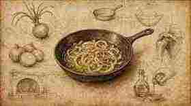
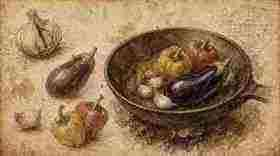
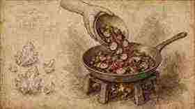
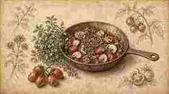
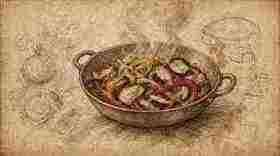
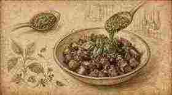
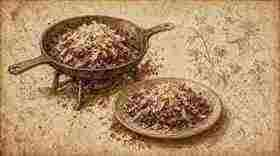

01
Rosare la cipolla.
Sweat / lightly brown the onion.

Ratanà · Ricetta I · Tutorial
Ratanà · Recipe I · Tutorial
Verdure di stagione in padella, pesto e ricotta salata — struttura Fooby, tavole illustrate in stile Leonardo come i tutorial Italia Squisita.
Seasonal vegetables in the pan, pesto and salted ricotta — Fooby structure, Leonardo-style illustrated plates like the Italia Squisita tutorials.
← Scheda del quaderno ← Notebook cardRosare la cipolla.
Sweat / lightly brown the onion.

Aggiungere l’aglio, poi melanzana e peperoni.
Add the garlic, then aubergine and peppers.

Salare, poi aggiungere la zucchina.
Season with salt, then add the courgette.

Aggiungere origano e pomodorini.
Add oregano and the date tomatoes.

Cuocere: melanzana e cipolla ben cotte; zucchina e peperoni leggermente croccanti.
Cook until aubergine and onion are well done; courgette and peppers slightly crisp.

Aggiungere pesto, basilico, erbe e olive.
Add pesto, basil, herbs and olives.

Finire con ricotta salata.
Finish with salted ricotta.
